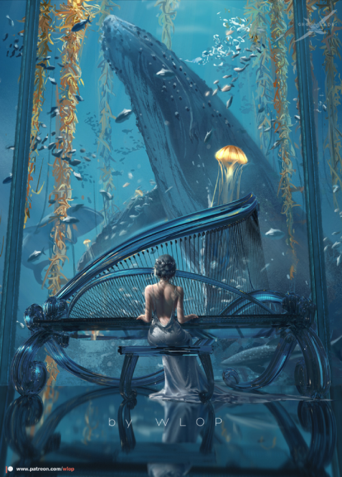
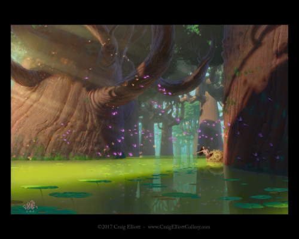
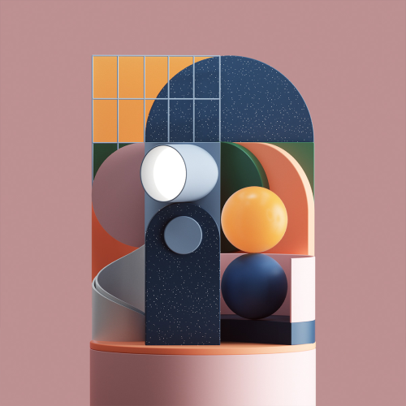

WLOP is the nickname of Wang Ling, a Hong Kong-based Chinese digital artist and software engineer. He is famous for his luminous fantasy theme art style with digital painting, which attracts hundreds of thousands of followers worldwide. His style has a mix of 2D and 3D, along with the use of general cool tone colors. His art inspired me to create something unique for myself, to have my own style instead of following the trend.
Craig Elliot is an illustrator, visual layout, visual development artist, production designer, and art director who works in the animation industry, notably Disney, DreamWorks, Sony, and Warner Bros. I mostly pay attention to Elliot’s Disney concept art because of the way he uses bright, colorful color scheme in his works. He inspired me to draw animation and characters.
Peter Tarka is a Polish Graphic Designer and Creative Director who works for many renowned tech brands such as Google, Apple, Microsoft, Spotify, Nike, Samsung, T-Mobile, Verizon, etc. He is famously known for his 3D design with the use of bold color composition and texture for products. He is the reason that made me interested in graphic design
